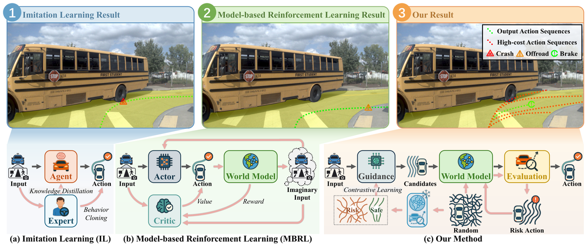
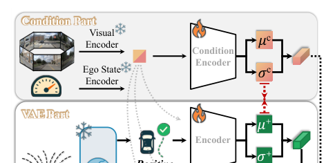
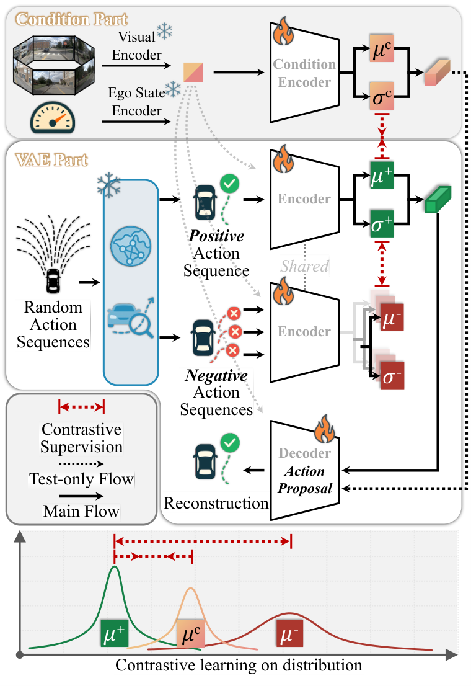
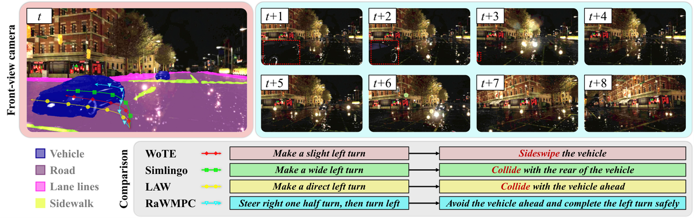
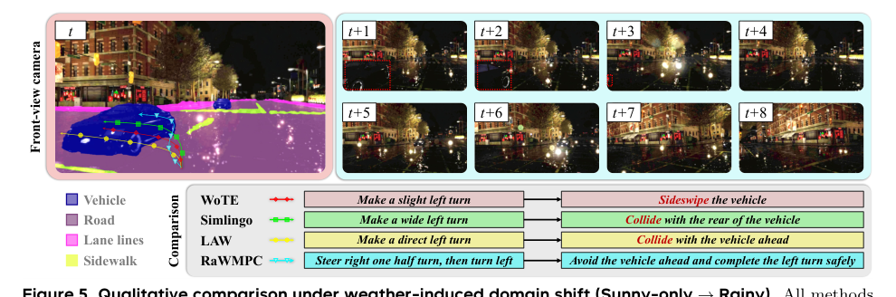

Risk-Aware：可推广的端到端自动驾驶的世界模型预测控制
简单摘要
端到端自动驾驶（E2E-AD）旨在将传感器观测直接映射为控制动作（转向、油门、制动），无需依赖手工设计的感知、预测或规划模块。近期最先进方法通常遵循模仿学习（IL）框架——使用仅传感器输入的智能体通过知识蒸馏复制特权专家的行为。尽管一些工作尝试通过未来运动建模、动作感知未来预测和大语言模型集成来提升驾驶性能，这些方法仍遵循学像专家一样驾驶的学习目标，无法根本解决IL的固有泛化困境：由于专家示范无法覆盖所有场景和情况，基于模仿的策略在遇到专家示范外的未见场景时倾向于产生不可预测且常不安全的驾驶行为。近期基于模型的RL方法试图通过学习环境动态并在其上规划来改进泛化，但大多数仍以最大化期望奖励为目标，缺乏对罕见但高风险场景的显式建模和采样。本文的核心主张是：使E2E-AD系统学习并主动避免风险动作比逐字复制专家驾驶行为更重要。
核心创新
第一，提出风险感知世界模型预测控制（RaWMPC）——完全放弃专家示范，利用风险感知世界模型驱动预测控制来克服泛化挑战。不同于训练actor最大化奖励的基于模型的RL，RaWMPC中的世界模型为一组候选驾驶行为预测近期未来状态并显式评估其风险以选择最低风险候选。第二，设计风险感知交互策略——模型从头开始自我识别高风险动作与环境交互，从中学习预测多样化风险行为的后果，无需任何专家示范即可从零达到强大性能。第三，将安全建模从事后反应转变为前摄性风险规避——直接评估每个候选动作的未来风险而非仅模仿安全行为。
技术细节
RaWMPC 的目标是根据驾驶历史记录，从候选车辆中选择最好的一辆，使车辆能够在确保安全和遵守交通规则的情况下驶向目的地。行动建议网络对应于采样和伪标签中所示的“指导”模块。这种构造将 RaWMPC 的知识（低风险/高质量的行动）转移到提案网络，同时避免任何外部监督。

3 方法
为了演示我们的解决方案、RaWMPC 的整体网络结构和管道。我们的培训方案，即风险意识互动培训，以实现高效优化。为了确保整个E2E-AD系统在测试过程中高效运行，采用自评估蒸馏方法来训练行动建议网络。作者这样设计，是为了把这一节的输入、约束和输出关系讲清楚。
3.1 RaWMPC的网络结构
3.1.1 问题设置
这一节先处理的是 我们考虑闭环端到端自动驾驶（E2E-AD）设置。作者这样设计，是为了先把输入表示、约束条件或中间状态整理成后续模块能直接使用的形式。
接着，论文还会处理 在每个时间步 ，代理接收三个输入。它的作用不是重复上一层计算，而是把这一阶段得到的结果继续传给后面的更新、渲染或决策步骤。
接着，论文还会处理 每个操作步骤都包含三个值。它的作用不是重复上一层计算，而是把这一阶段得到的结果继续传给后面的更新、渲染或决策步骤。
接着，论文还会处理 RaWMPC 的目标是根据驾驶历史记录，从候选车辆中选择最好的一辆，使车辆能够在确保安全和遵守交通规则的情况下驶向目的地。它的作用不是重复上一层计算，而是把这一阶段得到的结果继续传给后面的更新、渲染或决策步骤。
3.1.2 概述
视觉编码器、动作编码器和自我状态编码器分别用于将 、 、 和 映射到嵌入 、 、 和。然后，根据观察到的状态，我们使用世界模型来估计其以每个动作嵌入为条件的未来状态。与模仿学习方案相比，RaWMPC 提供了改进的可解释性，并引入了用于决策验证和风险缓解的明确机制。作者这样设计，是为了把这一节的输入、约束和输出关系讲清楚。
$$ \begin{aligned} &\mathbf{A}^{\star}_{t:t+H-1} = \mathbf{A}^{n^\star}_{t:t+H-1}, \\ &\text{其中}\,\,\, n^\star = \underset{n\in\{1,\dots,N\}}{\arg\min} C\big(\hat{\mathbf{s}}^{n}_{t+1:t+H}\big). \end{aligned} $$
放在“方法”这一部分看，这条式子是在把 A star t:t+H-1 写成可直接计算的形式。这实际上是在求一个使目标最优的 A star t:t+H-1，作者把问题显式写成优化形式，是为了让后面的选择、配准或规划过程可解释且可计算。
3.1.3 世界模特
围绕 3.1.3 世界模特，在我们的管道中，世界模型（表示为 ）用于预测给定动作的未来状态。具体来说，根据观察到的状态和潜在的下一步行动，世界模型预测近期的状态。作者这样设计，是为了把这一节的输入、约束和输出关系讲清楚。
3.1.4 语义引导解码
围绕 3.1.4 语义引导解码，一旦世界模型预测出一系列未来状态， ，三个变压器解码器就会分别将这些状态映射到特定于任务的输出。语义分割、潜在的交通事件（例如碰撞）和未来的自我状态（例如位置）。作者这样设计，是为了把这一节的输入、约束和输出关系讲清楚。
$$ \mathtt{Att_{seg}}(\mathbf{Q}_c,\mathbf{K}_c,\mathbf{V}_c) = \mathtt{softmax}(\mathtt{sim}(\mathbf{Q}_c,\mathbf{K}_c))\cdot\mathbf{V}_c, $$
这条式子是在定义一个可直接计算的中间量：右侧把相对位置、方向、权重或比例关系组合起来，左侧则把这个组合结果记成后续模块要反复使用的变量。
$$ \begin{aligned} \mathbf{Z}_e &= \mathbf{Q}_e \mathbf{K}_e^\top, \,\,\,\mathbf{Z}_c = \mathrm{pad}(\mathbf{Q}_c \mathbf{K}_c^\top), \\ \hat{E}^{n}_{t+k} &= \mathrm{sigmoid}( \mathrm{softmax}( \mathbf{W}_e * [\mathbf{Z}_e, \mathbf{Z}_c] ) \mathbf{V}_e ). \end{aligned} $$
这条式子是在把高斯的协方差从原始三维坐标系变换到相机或成像平面相关的坐标系中。这样后续光栅化时，模型才能正确知道每个高斯在当前视角下会拉伸成怎样的椭圆分布。
3.2 风险意识互动培训
为了使 RaWMPC 能够评估不同的动作并识别风险场景，我们提出了一种两阶段风险感知交互式训练方案，如图 1 所示。我们首先从记录的驾驶轨迹热启动世界模型。然后，我们通过在线模拟器交互对其进行改进，有意收集好的（安全的、目标导向的）和坏的（危险的）推出，以提高分布外控制下的泛化能力并学习罕见的。作者这样设计，是为了把这一节的输入、约束和输出关系讲清楚。
3.2.1 离线世界模型热身
我们使用一组记录的轨迹来引导 RaWMPC，以实现简单且基本的状态预测功能。给定来自 NAVSIM 或 CARLA 的状态-动作序列，世界模型会预测下一个状态并进行训练以匹配真实情况。我们使用模拟器提供的注释来监督分段和自我状态解码器。作者这样设计，是为了把这一节的输入、约束和输出关系讲清楚。

3.2.2 在线模拟器互动培训
围绕 3.2.2 在线模拟器互动培训，离线预热数据主要集中在类人安全行为上，因此对危险或非常规行为的覆盖范围有限。为了了解危险行为的后果，我们进行世界模型引导的探索。给定具有成本的排序候选动作，我们构建两个成本分位数集。
与 argmax 选择相比，这种软采样策略可以防止过度集中于极端或退化故障，同时仍然使交互偏向高风险区域。通过这种方式，分段交互和基于软成本的采样偏差探索朝着时间连贯且信息丰富的安全和危险轨迹。这一步的作用，是把当前结果继续传给后面的模块或训练目标。

$$ m_r = \begin{cases} \texttt{rand}, & \text{w.p. } \varepsilon_1,\\ \texttt{bad}, & \text{w.p. } (1-\varepsilon_1)\varepsilon_2,\\ \texttt{good}, & \text{w.p. } (1-\varepsilon_1)(1-\varepsilon_2), \end{cases} $$
放在“方法”这一部分看，它重点在定义或约束 m r 这一项。这条式子是在定义一个可直接计算的中间量：右侧把相对位置、方向、权重或比例关系组合起来，左侧则把这个组合结果记成后续模块要反复使用的变量。
$$ P(n \mid \texttt{good}) \propto \exp(-C^n/\tau_g), \quad n \in \mathcal{N}_{\texttt{good}}. $$
放在“方法”这一部分看，这条式子重点不是孤立地罗列符号，而是交代 good 如何承接前面的输入并把结果交给后续步骤。
3.3 政策学习的自我评价蒸馏
经过风险意识交互训练后，RaWMPC 可以通过预测候选动作序列的长期后果来可靠地对其进行评分。为了降低测试时在线优化的成本，我们将这种评估能力提炼成轻量级的动作建议网络，无需专家演示即可实现高效推理。行动建议网络对应于图 1 所示的“指导”模块。
3.3.1 动作采样和伪标签
给定状态历史（简化为 ），我们随机采样水平动作序列（简化为 ）并使用预训练的 RaWMPC 计算其成本。成本最低的序列被视为正例，成本最高的序列被视为负例。这种构造将 RaWMPC 的知识（低风险/高质量的行动）转移到提案网络，同时避免任何外部监督。作者这样设计，是为了把这一节的输入、约束和输出关系讲清楚。
3.3.2 行动提案网络
接下来，我们采用带有动作编码器、条件先验和解码器的条件 VAE (cVAE)。对于积极的行动，我们获得高斯后验并训练解码器来重建。对于每个负面动作 ，我们计算 ，但不重构负面动作，以防止生成器模仿不安全行为。作者这样设计，是为了把这一节的输入、约束和输出关系讲清楚。
3.3.3 对比训练目标
为了解决政策学习中缺乏专家监督的问题，我们使用 InfoNCE 目标来对高质量行动进行条件先验预测。我们根据经验发现，前者经常产生优化不足的轨迹。相比之下，后者明确地拉向正后验的统计中心，并通过 间接将其与负后验分开，从而导致更稳定的学习和更高质量的轨迹。作者这样设计，是为了把这一节的输入、约束和输出关系讲清楚。
| Method | Venue | Scheme | DS | SR(%) | Efficiency | Comfortness |
|---|---|---|---|---|---|---|
| VAD | ICCV 2023 | IL | 42.35 | 15.00 | 157.94 | 46.01 |
| SparseDrive | ICRA 2025 | IL | 44.54 | 16.71 | 170.21 | 48.63 |
| GenAD | ECCV 2024 | IL | 44.81 | 15.90 | - | - |
| UniAD | CVPR 2023 | IL | 45.81 | 16.36 | 129.21 | 43.58 |
| MomAD | CVPR 2025 | IL | 47.91 | 18.11 | 174.91 | 51.20 |
| UAD | T-PAMI 2025 | IL | 49.22 | 20.45 | 189.53 | 52.71 |
| BridgeAD | CVPR 2025 | IL | 50.06 | 22.73 | - | - |
| TCP | NeurIPS 2022 | IL | 59.90 | 30.00 | 76.54 | 18.08 |
| WoTE | ICCV 2025 | IL | 61.71 | 31.36 | - | - |
3.3.4 行动提案网络总体损失
我们的 cVAE 的总损失结合了重建、KL 正则化和对比损失。这种自我评估蒸馏训练了一个快速提案策略，该策略生成与 RaWMPC 评估一致的候选动作序列，从而消除了策略学习期间专家演示的需要。作者这样设计，是为了把这一节的输入、约束和输出关系讲清楚。
实验结论
继之前的工作之后，我们在两个广泛使用的基准上评估 RaWMPC。RaWMPC 在所有比较方法中实现了最好的整体性能，在完整设置下达到 88.31 DS 和 70.48% SR。
cVAE 采用 RaWMPC 评分动作以对比方式进行训练，将先验条件拉向积极因素，并将其推离消极因素。训练有素的解码器充当测试时动作提议者。
4.1 基准测试
继之前的工作之后，我们在两个广泛使用的基准上评估 RaWMPC。Bench2Drive 是 CARLA Leadboard v2 闭环基准测试，用于在复杂交互（例如切入、超车、绕道、紧急制动和让路）下进行多能力压力测试。
| c Method | Venue | Scheme | NC | DAC | EP | TTC | C | PDMS |
|---|---|---|---|---|---|---|---|---|
| Human | - | - | 100 | 100 | 87.5 | 100 | 99.9 | 94.8 |
| DrivingGPT | ICCV 2025 | IL | 98.9 | 90.7 | 79.7 | 94.9 | 100.0 | 82.4 |
| UniAD | CVPR 2023 | IL | 97.8 | 91.9 | 78.8 | 92.9 | 100.0 | 83.4 |
| Latent TransFuser | T-PAMI 2023 | IL | 97.4 | 92.8 | 79.0 | 92.4 | 100.0 | 83.8 |
| PARA-Drive | CVPR 2024 | IL | 97.9 | 92.4 | 79.3 | 93.0 | 99.8 | 84.0 |
| TransFuser | T-PAMI 2023 | IL | 97.7 | 92.7 | 79.8 | 92.7 | 100.0 | 84.5 |
| LAW | ICLR 2025 | IL | 96.4 | 95.4 | 81.7 | 88.7 | 99.9 | 84.6 |
| World4Drive | ICCV 2025 | IL | 97.4 | 94.3 | 79.9 | 92.8 | 100.0 | 85.1 |
| DiffusionDrive | CVPR 2025 | IL | 98.2 | 96.2 | 88.2 | 94.7 | 100.0 | 88.1 |
4.2 实施细节
我们采用预训练的 ViT 作为视觉编码器，并使用 SegViT 分割头作为分割解码器。使用基于查询的视图转换器从多视图图像中提取 BEV 特征。继之前的工作之后，输入图像分辨率为 ，BEV 特征图分辨率为。
4.3 与最先进的比较
在本节中，我们将在 CARLA 和 NAVSIM 测试集的闭环 Bench2Drive 基准测试上将 RaWMPC 与最先进的端到端驱动方法进行比较。(i) 无热身，RaWMPC 在不使用任何离线记录视频的情况下进行训练，以及 (ii) 完整设置，其中一组记录的驾驶轨迹用作可选的热启动。根据经验，热启动加速了收敛并进一步提高了最终性能，而即使没有它，RaWMPC 也已经超越了先前的最先进技术。

| Method | Venue | Scheme | Training Data | Tested on Rainy | |
|---|---|---|---|---|---|
| (lr)5-6 | DS | SR(%) | |||
| LAW | ICLR 2025 | IL | Sunny & Rainy | 34.54 | 7.09 |
| Sunny only | 23.58 | 3.56 | |||
| WoTE | ICCV 2025 | IL | Sunny & Rainy | 36.54 | 7.85 |
| Sunny only | 28.65 | 5.21 | |||
| SimLingo (Pretrained-VLM) | CVPR 2025 | IL | Sunny & Rainy | 51.69 | 13.68 |
| Sunny only | 33.49 | 8.97 | |||
| RaWMPC | -- | PC | Sunny & Rainy | 53.67 | 14.96 |
| Sunny only | 41.36 | 10.83 | |||
4.3.1 Bench2Drive 评估
RaWMPC 在所有比较方法中实现了最好的整体性能，在完整设置下达到 88.31 DS 和 70.48% SR。此外，与大多数高性能闭环智能体相比，RaWMPC 保持了有竞争力的效率并实现了更高的舒适度。
4.3.2 NAVSIM评估
RaWMPC 在所有基于学习的方法中实现了最高的 PDMS 91.3。热启动进一步改善了 PDMS (90.5 91.3)，这与大量记录的轨迹可以加速收敛并提高性能的观察结果一致。
4.3.3 天气引起的域转移下的泛化
为了评估训练分布之外的鲁棒性，我们进行了一项天气变化研究，其中所有方法都仅在雨天场景下进行评估，同时仅在晴天或晴天和雨天数据上进行训练。相比之下，RaWMPC 在两种训练方案下都实现了最佳 DS 和 SR，并且值得注意的是，当仅在 Sunny 上训练时（即，SimLingo）仍然显着优于强 IL 基线（LAW、WoTE）和 SimLingo。此外，与 SimLingo 相比，当从训练中删除多雨数据时，RaWMPC 表现出的退化要小得多，这表明对以前未见过的条件有更强的鲁棒性。

4.3.4 预测控制的定性可视化
我们在图 2 中提供了 RaWMPC 预测控制过程的一些可视化结果。给定 RGB 观察结果和高级导航命令（例如，继续直行或向左并入），我们的生成策略提出一组候选动作序列（例如，继续直行、绕道、刹车和变道）。通过比较这些预测结果并选择导航目标下成本最小的行动来选择最终行动。
4.4 消融研究
实验先检查了 在本节中，我们使用 Bench2Drive 数据集对所提出的方法进行全面的消融研究。
4.4.1 框架分析
表分析了与我们的模型设计一致的核心组件（第 2 节）。无语义指导删除了语义引导的事件解码，即将语义注意力从分段解码器融合到事件解码器中。这导致明显下降（DS 88.31 82.36，SR 70.48% 62.69%），表明准确的安全事件预测对于风险意识成本评估至关重要。
| Method | Metrics | |
|---|---|---|
| (lr)2-3 | DS | SR(%) |
| Entire RaWMPC (Ours) | 88.31 | 70.48 |
| w/o Semantic Guidance | 82.36 red -5.95 | 62.69 red -7.79 |
| w/o Segmentation Decoder | 70.85 red -17.46 | 48.95 red -21.53 |
| w/o Action Selection | 61.35 red -26.96 | 30.98 red -39.50 |
4.4.2 风险意识培训分析
表评估了用于完善世界模型的风险意识交互训练策略。除了随机探索之外，它还使用当前的 RaWMPC 对候选动作序列进行评分，并故意收集好的（低成本）和坏的（高成本）的首次展示，从而提高罕见的安全关键结果的覆盖率。
| Method | Metrics | |
|---|---|---|
| (lr)2-3 | DS | SR(%) |
| Risk-aware Sampling (Ours) | 88.31 | 70.48 |
| -Greedy Sampling | 83.86 red -4.45 | 61.74 red -8.74 |
| Random Sampling | 70.41 red -17.90 | 46.82 red -23.66 |
| Policy Learning Data | Metrics | |
|---|---|---|
| (lr)2-3 | DS | SR(%) |
| Pos. & Neg. Actions (Ours) | 88.31 | 70.48 |
| Expert Actions | 86.75 red -1.56 | 68.25 red -2.23 |
| Only Positive Actions | 83.65 red -4.66 | 66.52 red -3.96 |
4.4.3 自我评价蒸馏分析
表研究了如何训练第二节中的行动建议网络。成本最低的序列被视为正序列，而成本高的序列则被视为负序列，这会产生最佳性能（DS 88.31 / SR 70.48%）。仅使用专家操作来训练提案网络会略微降低性能（DS 86.75 / SR 68.25％），这表明自我评估目标比直接目标更好地与预测控制目标保持一致。
4.4.4 关于预测范围的讨论
表取消了世界模型部署和成本评估中使用的规划范围 ( )。增加到 H=10 会产生最佳结果 (DS 88.31 / SR 70.48%)，因为它为风险评估提供了足够的前瞻能力，同时保持预测不确定性可控。
理解评价
如果把这篇论文放回问题背景里看，它真正的价值在于：然后，根据观察到的状态，我们使用世界模型来估计其以每个动作嵌入为条件的未来状态。这说明作者不是只补一个局部模块，而是在重新组织问题该怎样被解决。
最能支撑这个判断的，还是实验给出的证据：与模仿学习方案相比，RaWMPC 提供了改进的可解释性，并引入了用于决策验证和风险缓解的明确机制。换句话说，这些设计并不只是概念上更完整，而是实实在在改变了最终结果。
当然，它离真正成熟的方案还有距离：RaWMPC 学习一个以动作为条件的世界模型来推出多个候选行为，预测未来的语义和安全关键事件，并通过显式最小化风险意识成本来选择动作。后续更值得继续推进的方向，是 未来继续提升效率、泛化能力以及在更复杂场景下的稳定性。